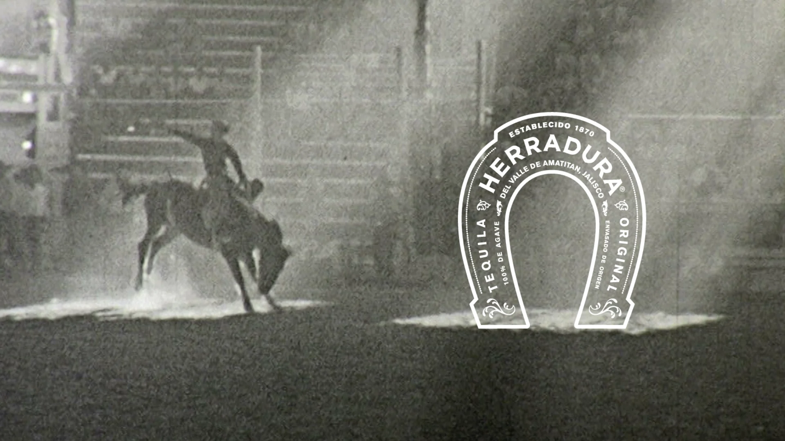
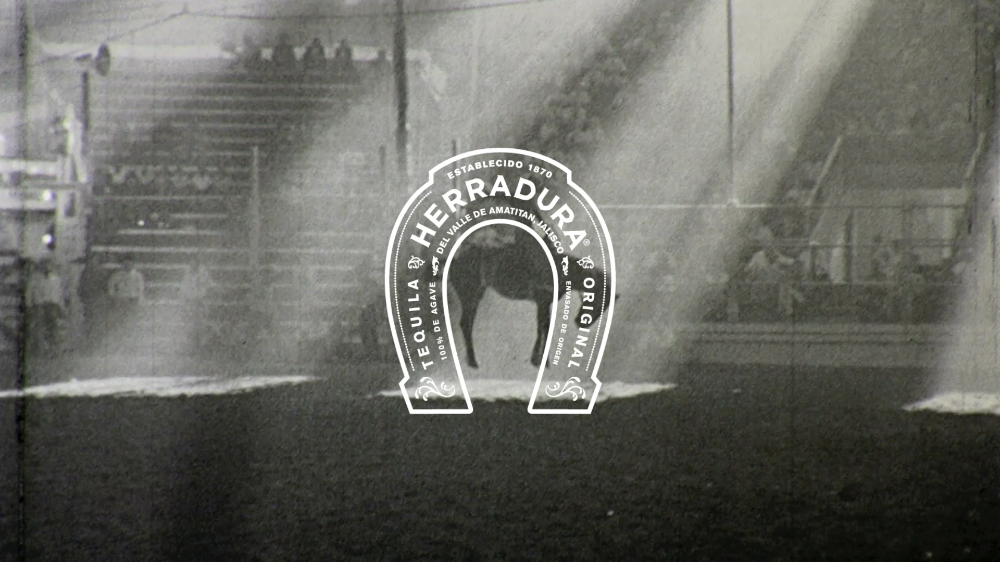

A 60-second spec brand film for Tequila Herradura, made on my own. It turned out too good to leave in the folder.
Herradura means horseshoe. The hacienda was named for one found on the grounds in 1870. So the film starts in Mexico: ancient stone, open country, then the dust and the lights of the rodeo, the animal and the rider, cut to the cadence of the brand. The mark lands last, the way a brand should, once you already feel it.
No client, no brief but my own. I wanted to see if I could build something that felt like a national ad out of nothing but an idea and an editing timeline: a test of taste and craft more than of budget.
The same story re-cut 9:16 for stories and reels, reframed shot by shot, not just letterboxed, so the rider and the mark still hit in a phone-shaped frame. A real campaign ships in both shapes; so does this one.
High-contrast black-and-white, grain left in, the horseshoe rendered as light in the dust: Herradura's premium, heritage register, just darker and more cinematic.


A self-directed concept made to demonstrate editing and brand instinct. All third-party footage belongs to its respective owners.